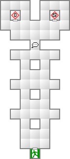
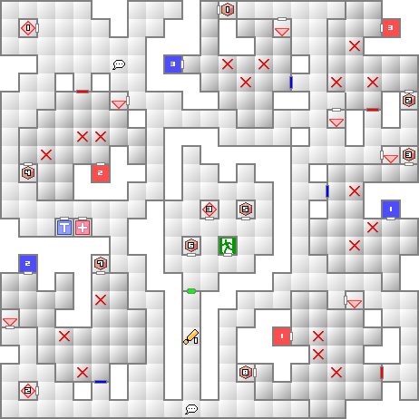
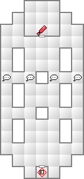

メインサーバールームへ行くためには赤と青の封印を解除しなければならないが、フィネガンと協力することで解除する封印が片方だけで済むようになる。
赤か青を選択することになるが、青の封印の場所には香があるので青を選んでおきたい。
この場合、全ての封印を自分で解く必要が出てくる。封印を解く場合は、赤の一、青の一、赤の二、青の二、赤の三、青の三の順に封印を解かなくてはならない。
結界を中央に見立てると、1Fからの赤い扉の出口が南西、青い扉の出口が北西となる。
打撃と技を反射するだけでなくテトラカーンまで所持しているので、前列で戦いながら回復も補助もこなせるだろう。上記の合体例で作成することができるが、魔神マハーマユリにメ・ディアラマを継承させていれば、メ・ディアラマも一緒に継承してくれるので、さらに強くなるだろう。あとは、御霊ニギミタマで速さを補いたい。
聖獣ビャッコのままマカラカーンを使ってもいいが、どうせならマハ・ラギオンとタル・ンダを所持する霊鳥ヤタガラスに乗り換えよう。妖鳥ルフと合体させればマカラカーンを継承したヤタガラスになるが、ルフに余計な魔法が入っていると継承されないので注意すること。ルフはCOMP合体で作成しよう。
| 能力 | LV54 HP4941 MP504 力16 知17 魔08 耐14 速09 運07 |
|---|---|
| 特技 | ショートジャブ 電撃裏拳 雷震王母の蹴り ねらい撃ち |
| 悪魔名 | 火炎 | 氷結 | 電撃 | 衝撃 | 破魔 | 呪殺 | 万能 |
|---|---|---|---|---|---|---|---|
| 精神 | 神経 | 魔力 | 打撃 | 斬撃 | 技 | 銃撃 | |
| 召喚士フィネガン | 100 | 100 | 100 | 100 | 無効 | 無効 | 100 |
| 無効 | 無効 | 無効 | 100 | 100 | 100 | 100 | |
| 死神ケルヌンノス | 80 | 80 | 80 | 80 | 無効 | 無効 | 100 |
| 無効 | 100 | 無効 | 50 | 50 | 50 | 50 |
協力しないで進むと結界の手前でフィネガンと戦うことになる。前列に死神ケルヌンノスを配置してくるため、まずはケルヌンノスを排除しなければならない。
ケルヌンノス、フィネガンともに物理系の特技を使用してくるが、速さを増強した女神パラスアテナがいるなら負けはしないだろう。ケルヌンノスのHPはフィネガン並に高いので、さっさと倒そうと思っても苦労するだろう。そこで、まず第一に防御をしっかり固めてから攻めていきたい。
それと、ケルヌンノスはベイバロンの気で全体を魅了してくる。魔力無効の装備は必須だ。
| 能力 | LV60 HP9292 MP640 力21 知13 魔09 耐19 速15 運12 |
|---|---|
| 特技 | バイツァ・ダスト 木っ端みじん斬り 火砕烈風破 アルガ・ゾーナ |
| 沈黙のささやき |
| 火炎 | 氷結 | 電撃 | 衝撃 | 破魔 | 呪殺 | 万能 |
|---|---|---|---|---|---|---|
| 精神 | 神経 | 魔力 | 打撃 | 斬撃 | 技 | 銃撃 |
| 100 | 100 | 100 | 100 | 無効 | 無効 | 100 |
| 反100 | 無効 | 無効 | 100 | 100 | 100 | 無効 |
3階のメインサーバルームでの戦闘になるが、事前に2階でディクローズの石を入手しておくこと。マルムスは1ターン目に沈黙のささやきを使用してくるからだ。
バイツァ・ダストで爆弾化してからの火砕烈風破が驚異に思えるかもしれないが、主人公の回避がしっかりしているならまず爆弾化はしないだろう。むしろ木っ端みじん斬りとアルガ・ゾーナのダメージのほうが驚異だ。
アルガ・ゾーナは位置が2、4、6番目のキャラのみにダメージが及ぶ。女神パラスアテナがいるなら反射できるので、是非前列真ん中に置いておこう。ネミッサや主人公は当たらない位置に配置しておくこと。



| 天使ヴァーチャー(44) | 妖魔ロイチェクタ(44) | 龍王ミズチ(43) |
| 魔獣オルトロス(45) | 夜魔インキュバス(42) | 妖鬼ヤクシャ(55) |
| 妖鬼ニャルモット(41) | 鬼女アマゾーン(43) | 妖獣カブラカン(45) |
| 邪鬼ラクシャーサ(43) | 屍鬼コスモゾンビ(44) | 怪異あかマント(42) |
| 魔王バロール(48) | 幽鬼クドラク(46) | 悪霊ウィッカーマン(45) |
妖鬼ヤクシャ、妖獣カブラカン、邪気ラクシャーサ、魔王バロールと、物理に強い悪魔が多い。出来れば破魔の雷光やハンマを所持したい。